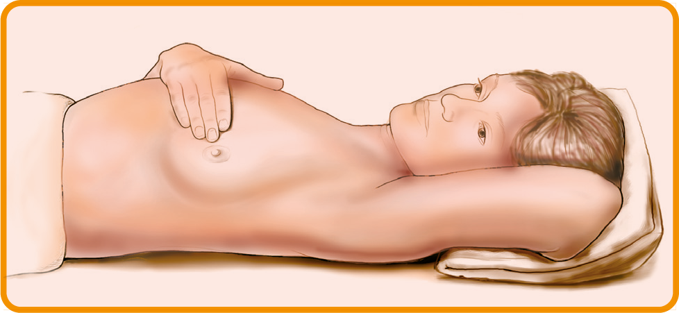
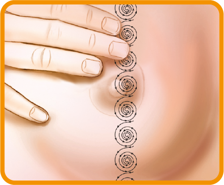
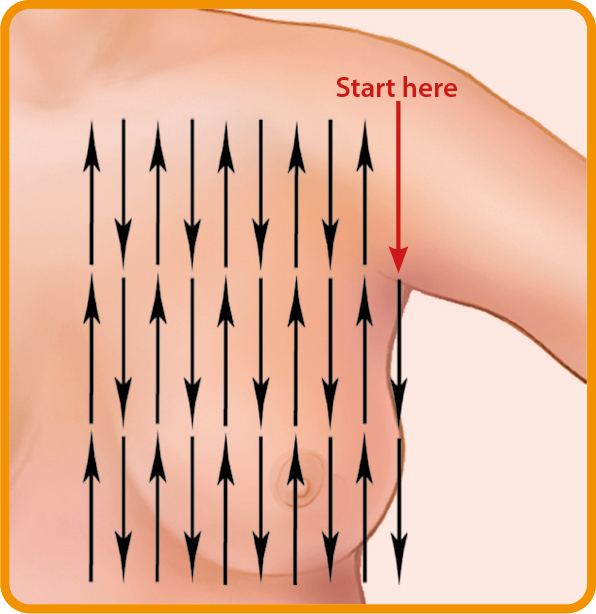

Starting in their 20s, women should carry out regular breast self-examinations (BSE). Consult a doctor immediately, if any changes in the breast are seen. A regular BSE helps to know how the breasts normally look and feel and to notice any changes.
The American College of Obstetricians and Gynecologists (ACOG) procedure for a breast self-exam involves 2 steps:
Step 1: Looking
Always carry out a BSE in good light. Standing in front of a mirror, place your hands on your hips and press down firmly. Signs to look for include dimpling, puckering, redness or scaliness of the breast skin or nipple, discharge from the nipples, changes in breast size or shape, or nipple pulled inward to sideways.
Step 2: Feeling
Lying flat on your back, examine each breast one by one. For left breast examination, place your left hand under the head.

Feel the left breast with your right hand using the pads of your three middle fingers, starting in the underarm area. Using overlapping, small circular motions of the pads of the fingers, feel the breast tissue using light, medium and firm pressure. Move your fingers slowly upto the rib cage. Next, move your fingers closer towards the nipple and the slowly up to the collarbone using the same small, circular motions and three levels of pressure. Continue this in an up-and-down pattern all the way across your breast, starting from the underarm upto the middle of the chest.
Examine the right breast in a similar manner with the three middle fingers of your left hand, keeping the right hand behind the head.
 
Any swelling or lump should be reported to a healthcare professional immediately.